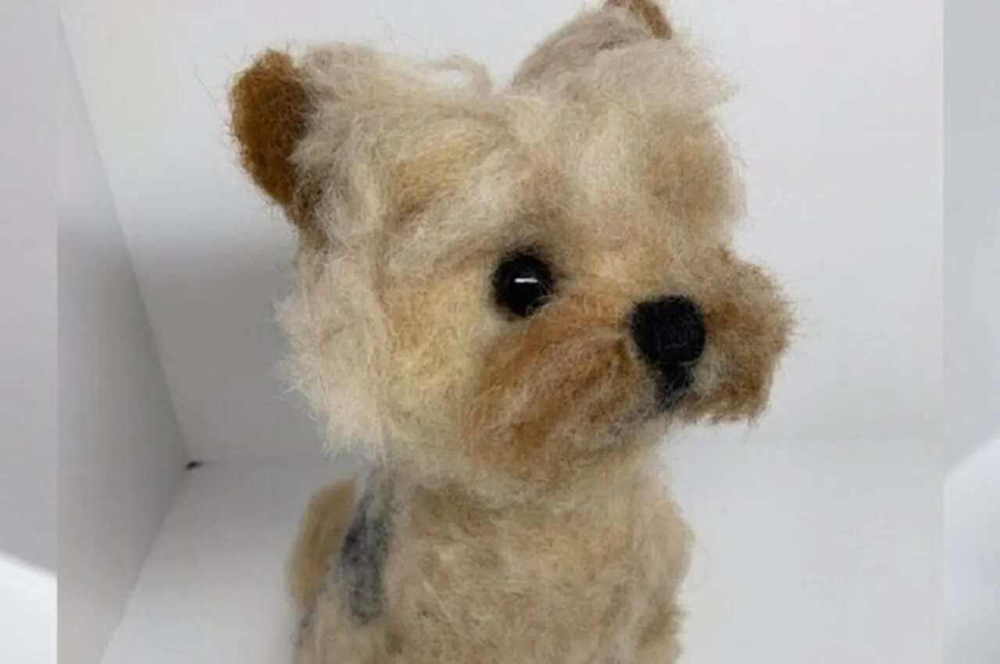
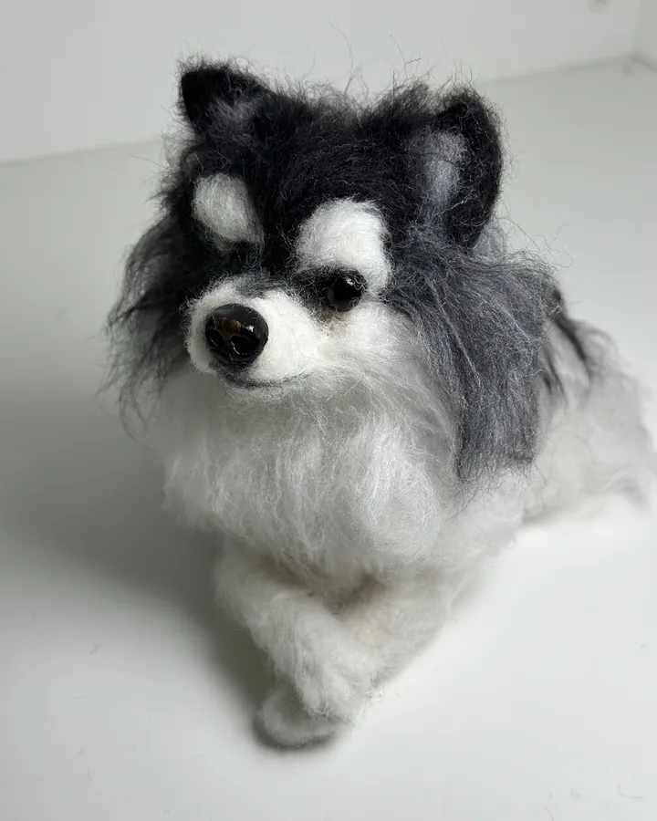
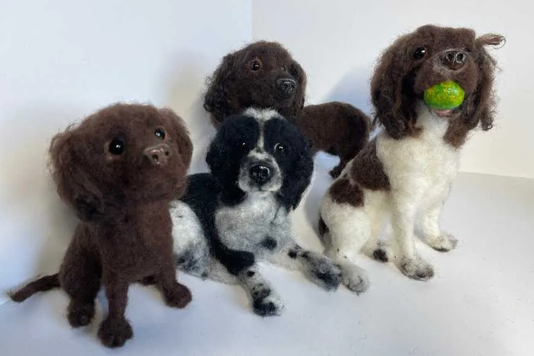
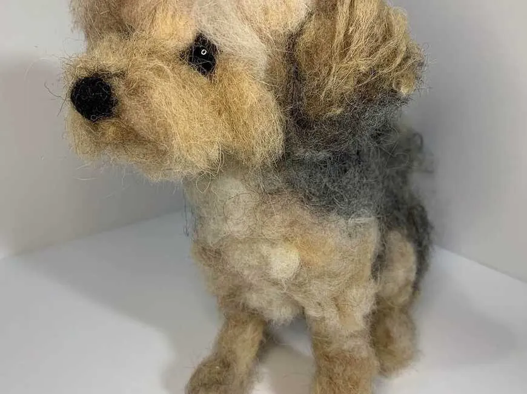
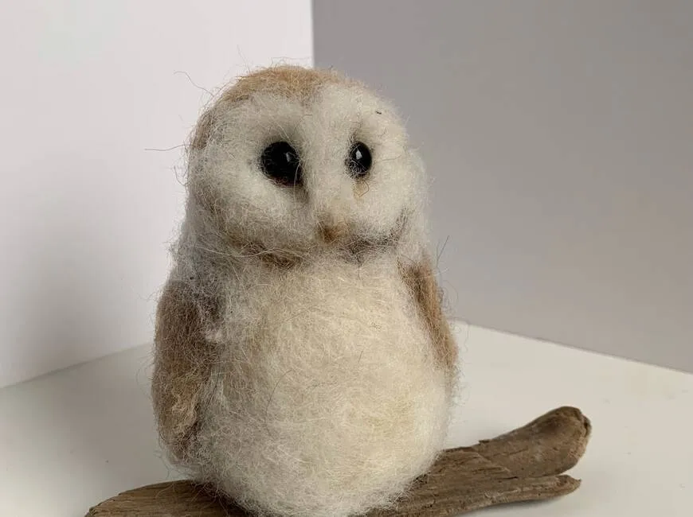
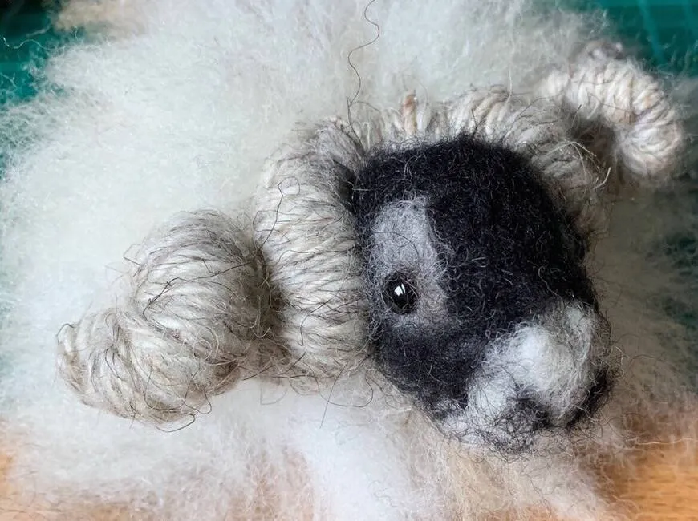
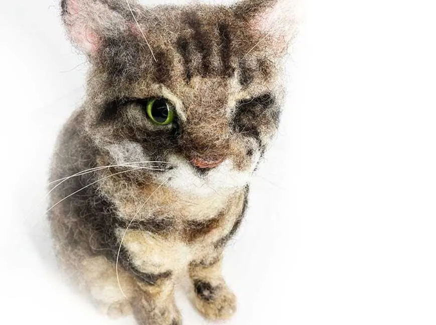

Likeness & personality
It’s important to me to capture their character — not just a breed type, but the pet you know.

Handmade in Livingston, Scotland
3D needle-felted animals and bespoke pet portraits — each one unique, handmade with love.
Meet the artist
Owner & artist of ffinlaysonart
I was born and live in Scotland. I gained a BA Hons degree from Edinburgh College of Art. I’m an avid needle felter and enjoy working with clients to produce bespoke 3D pet portraits — I hope my passion comes through in the work.
Needle felted animals and pet portraits made in Scotland — as seen on Kirstie’s Handmade Christmas 2022.
Our story

01 How it started
After graduating from Edinburgh College of Art (Illustration and Animation), I always enjoyed three-dimensional work. When I learnt to needle felt, I realised I had found my new obsession — and I have never stopped.
Hello, my name is Fiona and I create needle felted animals and bespoke pet portraits. Each one is handmade, unique and made with love by me in Scotland.
— Fiona
02 Where & how it’s made
I’m always delighted to discuss any aspect of your special pet’s portrait. Please note the waiting list for custom portraits is roughly 18 months.

03 What makes it special
It’s important to me to capture their character — not just a breed type, but the pet you know.
Every animal is needle felted by me in Livingston — unique wool textures, never mass-produced.
Many portraits celebrate pets who are deeply missed — a lively way to remember them, made with care.
Reviews
What we make
Bespoke pet portraits and ready-made felted friends — from the shop sections and studio favourites.

3D needle-felted likenesses of dogs, cats, horses and more — made from your photos, roughly 18–20 cm, with optional fur or collar details.

Barn owls, blue tits, puffins, robins and other small birds — tactile gifts and ornaments handmade in Scotland.

Wee sheep and farmyard characters — cosy Scottish favourites for shelves and Christmas trees.

Horses, owls, pandas, Vikings and new animals Fiona loves to try — always a challenge worth taking.
Everything is sold through the online shop, with secure checkout and buyer protection.
Studio notes
Sign up to be the first to know about sales and new products.
You’re in! 🎉
Continue to the shopReady-made felties ship from the shop; custom portraits are discussed by message. Thanks for supporting handmade work from Scotland.
Visit the shop